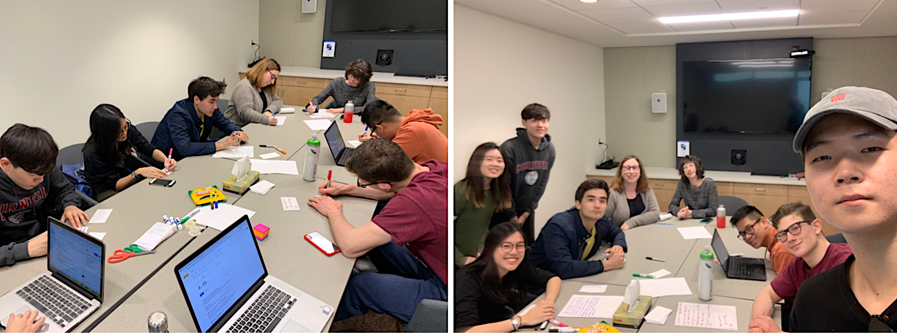
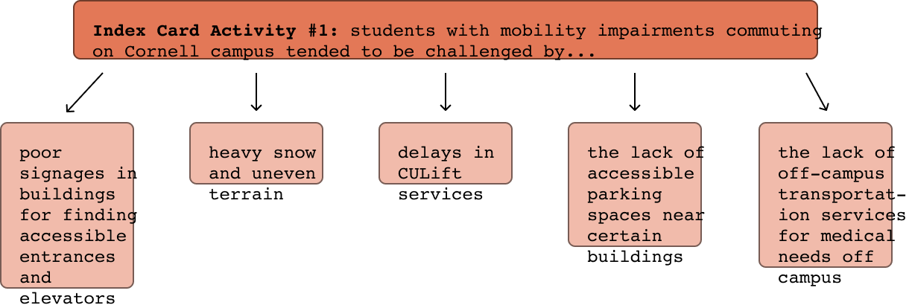
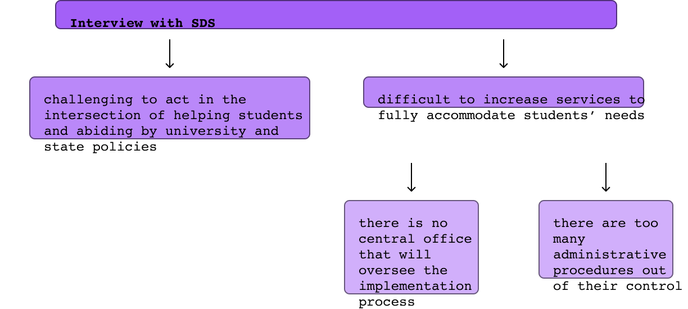
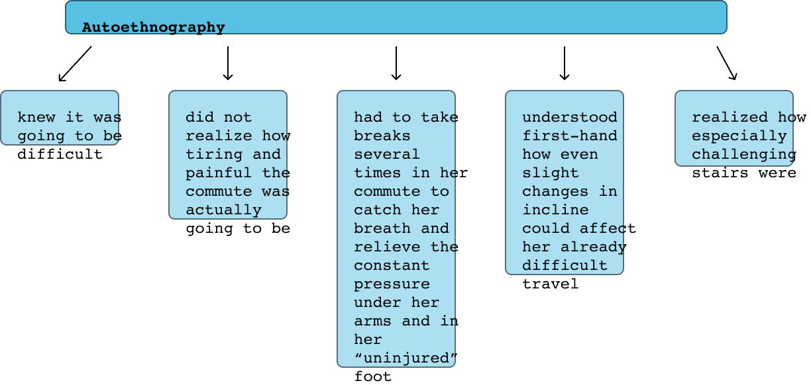
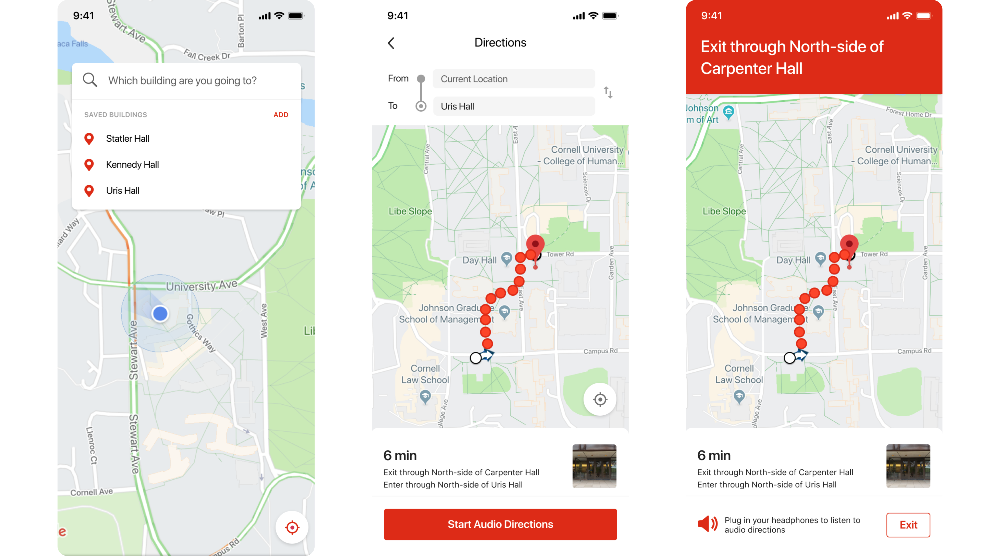
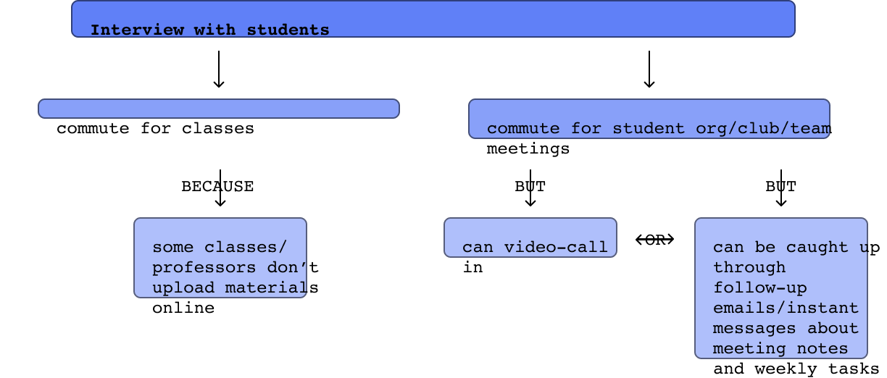
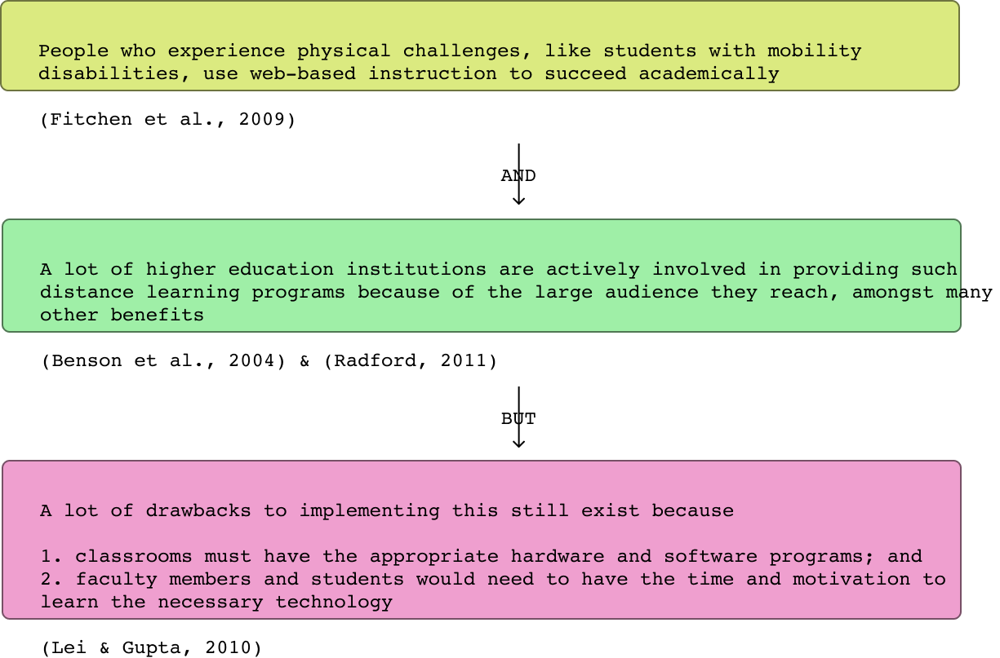
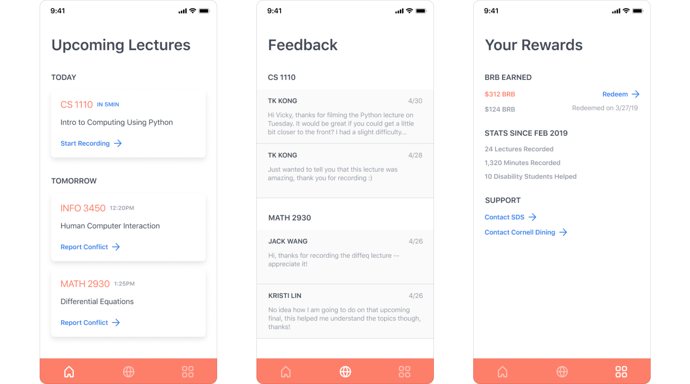

A UX research and design group project on understanding the commuting needs of students with temporary mobility impairments and alleviating their challenges with an online live lecture tool.
Jack Wang, Kristi Lin, Tae Kyung Kong, myself
UX researcher & technical writer
02/2019 – 05/2019
I worked on this semester-long project as part of the Advanced Human-Computer Interaction Design at Cornell University in the Spring of 2019. I really enjoyed this project because I had great team members who were all really willing to spend the necessary time and effort to recruit, research, and brainstorm.
Throughout this project, I truly learned how difficult it is to be innovative and how important it is to constantly refer back to user data.
Students with physical disabilities in postsecondary education continue to face challenges commuting to and from classes despite institutions’ attempts to provide adequate accommodations. This is especially the case on campuses with varying topography.
Through the use of research and design methods such as codesign, autoethnography, and nondesign, we found that we could alleviate the commuting needs of such students by allowing them to forego their commute entirely through a distance-learning platform that still ensures their academic successes.
We recruited student participants by sending out recruitment messages in various listservs and group chats we were in. Specifically, we asked for anyone who has previously been or is currently mobility challenged due to a leg injury on Cornell University’s hilly campus to participate.
All of the student participants who expressed interest were previously temporarily disabled and used crutches to accommodate their commuting needs; none of them were chronically disabled or used wheelchairs for their commute.
We decided to use codesign as our first user research and design method because we felt that having multiple stakeholders at the table would help us dive deep into the problem space and effectively brainstorm possible solutions.
To begin, we explained to everyone what our study was about, debriefed them on what the codesign was going to encompass, and asked everyone to go around and introduce themselves. Specifically, we asked the students to briefly reflect on their experiences when they were temporarily impaired and asked the SDS representatives to summarize what services and accommodations they currently provide.
Then, after setting some ground rules, we facilitated two index card activities designed to set both the university employees and the students up to group similar ideas together later on.
Below are the key points gathered from the two index card actitivities:
Because we had very limited time with all of our student participants, we interviewed the two SDS representatives after the codesign session to let them express any additional thoughts.
Specifically, we asked about the challenges that they face on their end regarding this problem space and the ways in which they measure the efficacy of their services.
Below are the key challenges the SDS representatives have identified:
We decided to conduct an autoethnography session for our second user research and design method to help us empathize with our participant population. (This also allowed us to gain a better understanding of our student participants despite not being able to interview them after the codesign session.)
One researcher borrowed a pair of crutches to walk to and from the academic buildings of her classes while another researcher – I – walked alongside her to take notes.
From this autoethnography session, the researcher was able to personally experience the challenges of commuting on campus grounds while using crutches.
researcher collapsed in exhaustion after using the crutches up The Slope
From the autoethnography session, we knew that we wanted to consider no-tech and low-tech design solutions first because students on crutches would not, for instance, be able to take out their phones while commuting to check for the most accessible route to their classes.
One idea that we pondered over for a long time was painting accessible paths a bright color so that students on crutches could easily know which paths to take. We really liked this idea because it would also resolve the issue of poor signage by directing students to the most accessible entrances. However, because the paint would not let users know in advance if a certain path would lead them all the way to their desired destination or to another location on campus entirely, we knew this was not feasible.
After considering several other nondesign solutions but realizing the unfeasibility of them, we finally considered technological solutions.
We decided on designing a mobile app that would give students audio directions to their destinations through the most accessible routes.
initial prototype: Home screen > Route Preview screen > Audio Direction screen
This was convincing because:
students would not have to take out their phones;
SDS would have less of a financial burden to purchase new equipment; and
the app could be implemented by leveraging off an accessibility map that Cornell currently has, something that most students do not know about.
Unfortunately, we received feedback that this idea wasn’t particularly innovative because of its resemblance to Google Maps. Looking for more creative alternatives, we turned back to the drawing board.
As we reviewed our data and brainstormed some more, we realized that the commuting needs of our users could potentially be alleviated if they could forego commuting entirely. We decided to interview some more students to explore this insight.
We recruited three female students who were previously temporarily injured on campus and asked them about the reasons why they commuted while on crutches.
All of them said that they primarily needed to commute to attend class.
We thus reasoned that the commuting needs of our users could be alleviated if their academic needs could be fulfilled in ways other than commuting to class.
To make sure our final design solution was innovative, we decided to gather some more background research.
With these drawbacks in mind, we decided that our final design solution should build upon existing web-based instruction but resolve some of its outstanding issues. Our design solution, then, is an online platform that allows students without mobility impairments to attend their regular classes and stream lectures for students with mobility impairments.
This live lecture tool is valuable because it:
alleviates the financial burden schools may have for purchasing extra equipment and teaching faculty how to record lectures; and
relieves students with mobility impairments of the need to physically commute to class.
Still, these students are responsible for following along with lectures at the usual class time because the videos will not be available once the live stream ends. This is to prevent students with access to these videos, as diagnosed and approved by SDS, from potentially having unfair advantages for possessing resources that other students cannot attain. The students with disabilities can also contact the students recording the lectures to ensure that the videos streamed are of the utmost quality.
final prototype [student recording]: Home screen > Feedback screen > Rewards screen
final prototype [student viewing]: Home Screen > Live Screen
We also considered incentivizing students to volunteer and record lectures by partnering with the university to reward these students with money for food on campus. At Cornell University, where many cafes struggle with food waste despite the prevalence of students skipping meals to save money (Gonzalez, Shin & Weiss, 2019), this comes in the form of Big Red Bucks and meal swipes for dining halls.
We thus believe that our design solution counters a lot of existing problems within the university and can be modified for other postsecondary institutions as well.
We began our project thinking that we would make it easier for students with temporary mobility impairments to travel on hilly campuses, and we held onto this assumption through most of our user research and design methods and brainstorming sessions; even as we debated over the originality and feasibility of various design solutions, we wondered how we would alleviate our users’ negative experiences with commuting on crutches on uneven terrain.
And yet, the challenge of innovation in our initial design solution was what prompted us to really think about our users’ needs. It was only then that we realized that the problem space we should have been tackling all along was not the actual commute of our users but the purpose behind their commute
The unexpected gap in the design solution that we ultimately came up with and the problem space that we initially wanted to intervene showed us the importance of going into a project without a potential solution in mind and the value of reviewing and reflecting over and over again the information that our users have provided to us.I really enjoyed this project because of how much time and effort my teammates and I put into researching and brainstorming. It was difficult for all of us to find overlapping times in our schedules, but we made it happen.
Props to us!